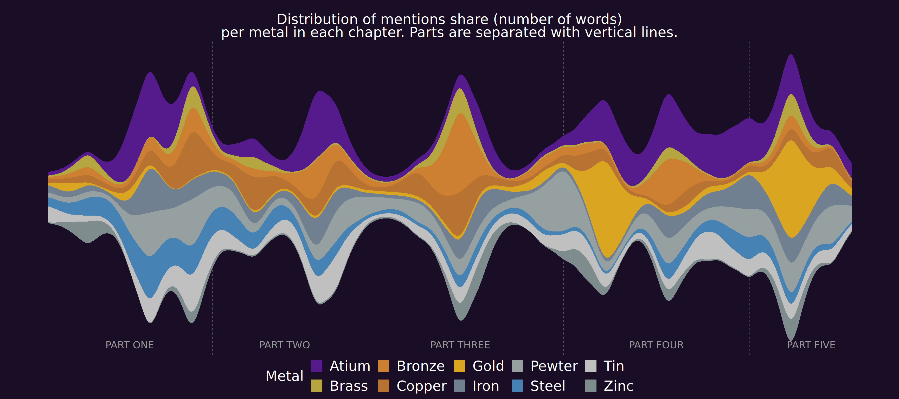
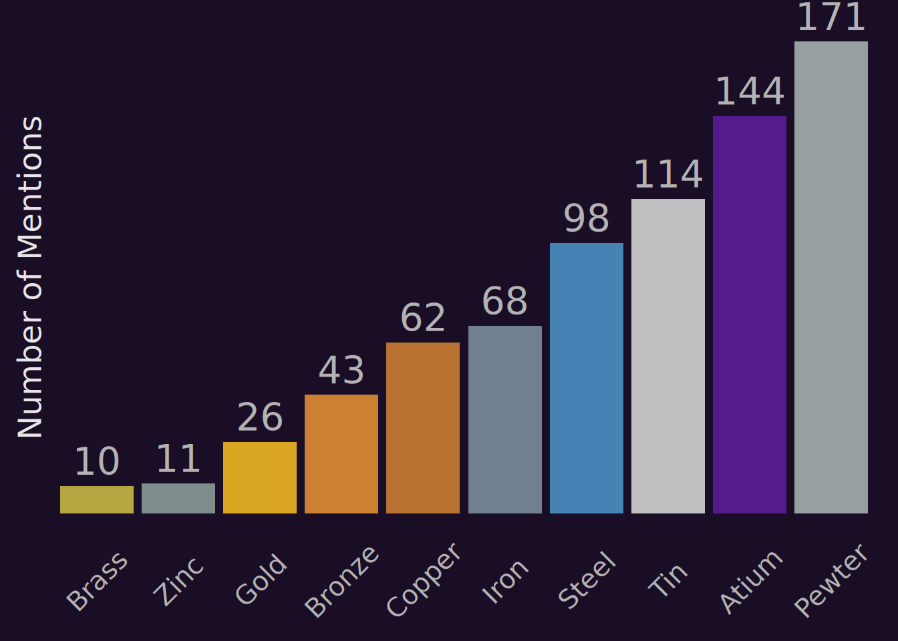
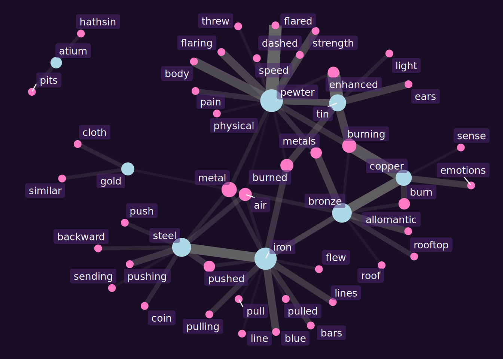

mistborn_text <- pdf_text("./final_empire.pdf")Metals in Mistborn
Introduction
I’ve loved reading since I was little, and that passion has only grown stronger over the years. There’s little I enjoy more than curling up on the couch or in bed with a good book, completely absorbed in another world.
Recently, I decided to merge two of my favorite things: data science and reading. I wanted to create visualizations of some of my favorite books, though I wasn’t sure initially how to approach it or which tools to use. Through research, I discovered tidytext, a textual analysis package in R that opened up exciting possibilities for exploration and discovery.
What you’ll see below represents the first fruits of this labor of love, a journey that combines the analytical precision of data science with the narrative richness of literature.
Analyzing Metals in Mistborn
Among my favorite books is Brandon Sanderson’s fantasy novel Mistborn: The Final Empire, wherein metals transcend their physical properties to become the very foundation of magic itself. In Sanderson’s world, each metal grants extraordinary powers to those gifted enough to “burn” it through the mystical art of Allomancy.
This exploration dives into how these metals appear throughout the narrative, using data to uncover patterns and relationships not apparent to the human eye. Through R and its remarkable ecosystem of text analysis tools, I’ve extracted every mention, processed thousands of words, and transformed raw text into visualizations that illuminate the story in entirely new ways.
What follows is both a technical walkthrough and a love letter to literature.
Tools and Libraries
The project utilizes several R libraries:
- tidyverse: For data manipulation and visualization.
- tidytext: For text processing and tokenization.
- pdftools: To extract text from the PDF.
- ggstream, ggraph, igraph: For creating stream graphs and network visualizations.
- gt: For styling tables.
- widyr: For calculating word correlations.
In addition canva was also used for formatting the final product.
Data Extraction and Cleaning
The first challenge is getting the text out of the PDF file and preparing it for analysis.
Reading the PDF
We begin by loading the PDF using pdftools:
This creates a character vector where each element is a page of the book.
Cleaning the Text
The raw text includes unwanted elements like page headers (e.g., “mistborn 123”) and footers (e.g., “123 brandon sanderson”). We split the text into lines and clean it with regular expressions:
text_lines <- unlist(strsplit(mistborn_text, "\n")) %>%
str_replace_all("mistborn\\s+\\d+", "") %>%
str_replace_all("\\d+\\s+brandon sanderson", "") %>%
str_replace_all("\n", " ") %>%
str_replace_all("[^[:alnum:][:space:]\\.]", " ")This removes headers, footers, and special characters, leaving only alphanumeric text, spaces, and periods.
Extracting the Story
The actual story starts at “PROLOGUE” and ends before “ARS ARCANUM.” We locate these markers and extract the relevant lines:
prologue_line <- which(str_detect(text_lines, "PROLOGUE$"))
ars_arcanum_line <- which(str_detect(text_lines, "ARS ARCANUM$"))
story_lines <- text_lines[prologue_line:(ars_arcanum_line - 1)]Identifying Chapters
Chapters are marked by lines containing “PROLOGUE,” “EPILOGUE,” or a single number (e.g., “1”). We find these markers and assign each line to a chapter:
chapter_markers <- which(str_detect(story_lines, "\\b\\d{1,2}\\b") |
str_detect(story_lines, "PROLOGUE$") |
str_detect(story_lines, "EPILOGUE$"))
chapter_names <- story_lines[chapter_markers]
line_chapters <- findInterval(seq_along(story_lines), chapter_markers)
chapter_labels <- chapter_names[line_chapters]We also create a tibble mapping chapter names to unique IDs:
chapter_id <- tibble(
chapter_name = str_trim(chapter_names),
chapter_id = seq(1, 40)
)
head(chapter_id,4) %>% kable()| chapter_name | chapter_id |
|---|---|
| PROLOGUE | 1 |
| 1 | 2 |
| 2 | 3 |
| 3 | 4 |
Structuring the Data
The cleaned text is organized into a tibble with columns for chapter name, text, line number, and chapter ID:
df <- tibble(
chapter = str_trim(chapter_labels),
text = story_lines
) %>%
group_by(chapter) %>%
mutate(line_number = row_number()) %>%
ungroup() %>%
inner_join(chapter_id, join_by(chapter == chapter_name))
head(df,4) %>% kable()| chapter | text | line_number | chapter_id |
|---|---|---|---|
| PROLOGUE | PROLOGUE | 1 | 1 |
| PROLOGUE | ASH FELL FROM THE SKY. | 2 | 1 |
| PROLOGUE | Lord Tresting frowned glancing up at the ruddy midday | 3 | 1 |
| PROLOGUE | sky as his servants scuttled forward opening a parasol over | 4 | 1 |
We also extract the book’s parts (e.g., “PART ONE”) for use in visualizations:
part_lines <- df %>%
filter(str_detect(text, "^\\s+PART")) %>%
mutate(text = str_trim(text)) %>%
rename(part = text) %>%
select(chapter_id, part)
part_lines %>% kable()| chapter_id | part |
|---|---|
| 1 | PART ONE |
| 9 | PART TWO |
| 16 | PART THREE |
| 26 | PART FOUR |
| 35 | PART FIVE |
Text Analysis
With the text structured, we analyze mentions of the Allomantic metals: iron, steel, tin, pewter, brass, zinc, copper, bronze, atium, and gold.
Tokenizing the Text
Using tidytext, we break the text into individual words:
text_df <- df %>%
unnest_tokens(word, text)
head(text_df) %>% kable()| chapter | line_number | chapter_id | word |
|---|---|---|---|
| PROLOGUE | 1 | 1 | prologue |
| PROLOGUE | 2 | 1 | ash |
| PROLOGUE | 2 | 1 | fell |
| PROLOGUE | 2 | 1 | from |
| PROLOGUE | 2 | 1 | the |
| PROLOGUE | 2 | 1 | sky |
Counting Metal Mentions
We filter for the metals and count their mentions per chapter:
metals_list <- c("iron", "steel", "tin", "pewter", "brass", "zinc", "copper", "bronze", "atium", "gold")
metals_text <- text_df %>%
filter(word %in% metals_list) %>%
mutate(word = str_to_title(word)) %>%
count(chapter_id, word, name = "mentions") %>%
left_join(part_lines, join_by(chapter_id == chapter_id)) %>%
fill(part)
head(metals_text,4) %>% kable()| chapter_id | word | mentions | part |
|---|---|---|---|
| 1 | Iron | 1 | PART ONE |
| 1 | Steel | 2 | PART ONE |
| 1 | Tin | 5 | PART ONE |
| 2 | Gold | 1 | PART ONE |
This produces a dataset with each metal’s mention count per chapter, linked to the book’s parts.
Stream graph
The stream graph was generated from the data above.
stream_graph <- ggplot() +
# Add part divider lines
geom_vline(
data = part_lines,
aes(xintercept = chapter_id),
color = "grey50",
linewidth = 0.2,
linetype = 2
) +
# Streamgraph layer
geom_stream(
data = metals_text,
aes(x = chapter_id, y = mentions, fill = word),
type = "mirror",
extra_span = 0.1,
bw = 0.55
) +
# Add part labels at the bottom of the plot
geom_text(
data = metals_text %>%
group_by(part) %>%
summarize(x = min(chapter_id) + n_distinct(chapter_id) / 2),
aes(x, y = -Inf, label = part),
vjust = -1,
hjust = 0.5,
color = "grey60",
family = "Trajan Pro",
size = 5
) +
# Custom fill scale for metals
scale_fill_manual(values = metal_colors) +
labs(
fill = "Metal",
subtitle = "Distribution of mentions share (number of words)<br>
per metal in each chapter. Parts are separated with vertical lines."
) +
# Apply custom theme
theme_mistborn()
stream_graph
Each metal is a colored stream, with vertical lines marking the book’s parts. This highlights shifts in focus, like a spike in “atium” mentions during key plot moments.
Bar Plot
A bar plot displays total mentions for each metal:
# Summarize metal mention counts and reorder factors
plot_data <- metals_text %>%
group_by(word) %>%
summarise(total_mentions = sum(mentions)) %>%
arrange(desc(total_mentions)) %>%
mutate(word = fct_reorder(word, total_mentions))
# Create horizontal bar plot
bar_plot <- plot_data %>%
ggplot(aes(x = word, y = total_mentions, fill = word)) +
# Bar geometry
geom_col() +
# Custom fill colors
scale_fill_manual(values = metal_colors) +
# Remove legend
guides(fill = "none") +
# Labels
labs(y = "Number of Mentions") +
# Allow labels to extend past plot area
coord_cartesian(clip = "off") +
# Text labels above bars
geom_text(
aes(label = total_mentions),
color = "grey70",
hjust = 0.5,
vjust = -0.4,
size = 7.5,
family = "Trajan Pro"
) +
# Apply custom theme
theme_mist() +
# Additional theme tweaks
theme(
axis.text.y = element_blank(),
axis.title.x = element_blank(),
axis.title.y = element_text(size = 18, angle = 90)
)
bar_plot
Exploring Word Correlations
To see how metals are used in context, we calculate correlations between words appearing together. We flatten the text, split it into sentences, group sentences into sections of ten, and compute pairwise correlations for words appearing at least 20 times:
mist_section <- str_flatten(story_lines, collapse = " ") %>%
as_tibble() %>%
unnest_sentences(sentence, value) %>%
mutate(section = row_number() %/% 10) %>%
unnest_tokens(word, sentence) %>%
filter(!word %in% stop_words$word)
word_cors <- mist_section %>%
group_by(word) %>%
filter(n() >= 20) %>%
pairwise_cor(word, section, sort = TRUE) %>%
filter(item1 %in% metals_list)
head(word_cors,4) %>% kable()| item1 | item2 | correlation |
|---|---|---|
| tin | enhanced | 0.3414959 |
| pewter | flared | 0.3408370 |
| copper | burning | 0.3076759 |
| iron | steel | 0.2836302 |
This reveals which words are frequently associated with each metal.
Network Graph
# Set seed for reproducible layout
set.seed(2000)
# Filter word correlations and create graph
graph <- word_cors %>%
filter(correlation > 0.15) %>%
graph_from_data_frame()
# Compute node degrees and tag metals
V(graph)$degree <- degree(graph)
V(graph)$is_metal <- V(graph)$name %in% metals_list # Boolean for coloring nodes
# Create network graph with conditional styling
network_Graph <- graph %>%
ggraph(layout = "fr") +
# Draw edges with thickness and transparency based on correlation
geom_edge_link(
aes(edge_alpha = correlation, edge_width = correlation),
color = "grey40",
show.legend = FALSE
) +
# Draw nodes with size by degree and color by is_metal
geom_node_point(
aes(size = degree, color = is_metal)
) +
# Custom colors for metal vs non-metal nodes
scale_color_manual(
values = c("FALSE" = "#ff79c6", "TRUE" = "lightblue")
) +
# Add labels with soft background
geom_node_label(
aes(label = name),
color = "grey95",
fill = "#4D267380",
repel = TRUE,
force = 1,
force_pull = 0.1,
family = "Trajan Pro",
label.size = 0,
size = 3.5
) +
# Control node size range
scale_size_continuous(range = c(3, 10)) +
# Remove legends
guides(size = "none", color = "none") +
# Apply custom theme
theme_mistborn()
network_Graph
Metals (in light blue) connect to related terms (in pink), showing context—like “steel” linking to “push.”
Due to a desire for brevity I left some of the code out, to see the entire code you can view it on my github.
Conclusion
Throughout this project, I gained valuable experience and enjoyed the journey of exploration and experimentation. I explored numerous approaches and visualization options before settling on my final choices, and I’m quite pleased with how everything turned out.
Poster
The final image was creating using canva to format and style it.